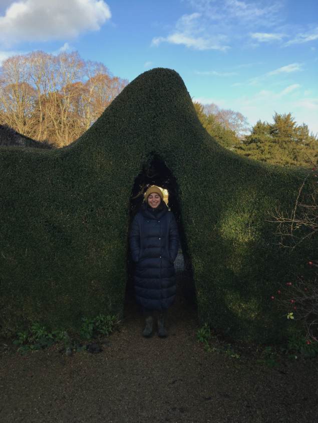
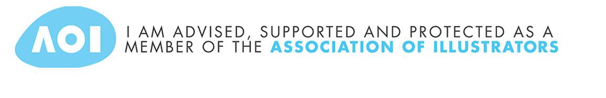

Picture Book Illustration
Fiction Illustration
Sketchbook
Shop
Textiles Portfolio
About/Contact
Picture Book Illustration
Fiction Illustration
Sketchbook
Shop
Textiles Portfolio
About/Contact
I’m Gülce, a freelance illustrator from Turkey, currently living in beautiful Warwickshire. My love for drawing and storytelling began as a child and I have not been without paper and pencil since!
Having grown up watching animations and cartoons, I developed a passion and admiration for visual story telling and character design. I remember the day I decided I wanted to draw as brilliantly as the artists who gave life to my favourite characters.With that goal in my mind I studied painting in high school, then took a slight detour and completed my BA degree in Textiles and Fashion Design in Istanbul, where I was born and brought up.
After moving to the UK in 2016 my range of work has expanded beyond my education in textiles, and my passion for visual story telling led me to explore character design, so I studied Character Design at Escape Studios, followed by Children’s Book Illustrations at City Lit.My creative journey is fuelled by my passion for fantastic stories, atmospheric scenes, and the magic of animation. I love creating diverse characters with strong expressions and setting them off on adventures. Mental health, gender identity and equality, and embracing and celebrating differences are just some of the topics which deeply interest me. Additionally I am a fan of lighthearted storytelling as well as the occasional spooky theme.
